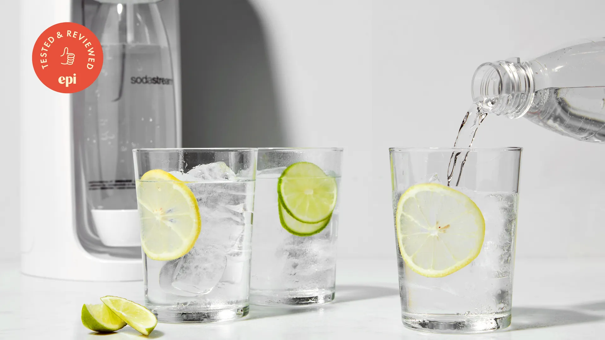
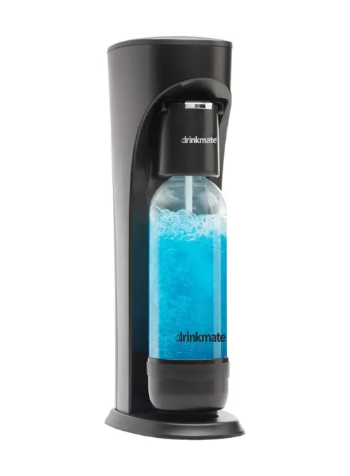
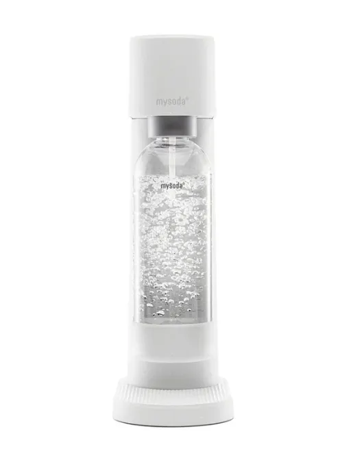
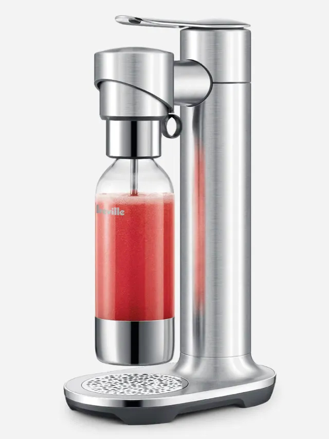
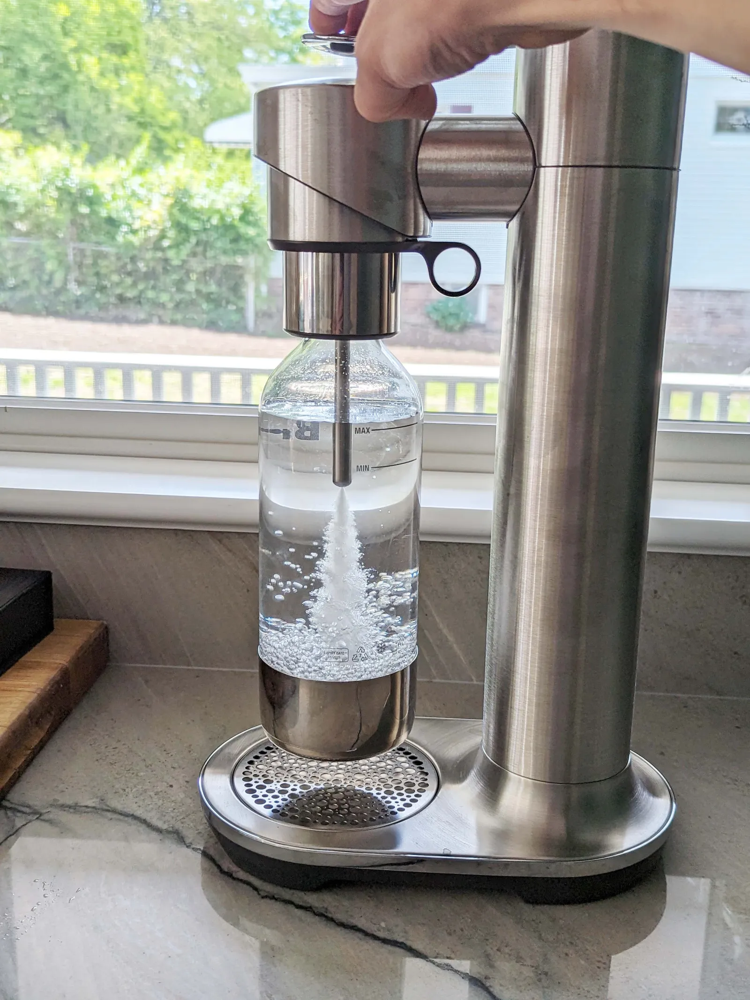

We tested top soda makers from brands like SodaStream, Aarke, and Drinkmate to find the best option for home carbonation.
After extensive testing, here are our favorites:
Best Overall: SodaStream Art
The SodaStream Art is user-friendly, stylish, and efficient. It offers adjustable carbonation levels and works seamlessly with SodaStream CO₂ cylinders.
Best High-End Option: Aarke Carbonator III
With its premium stainless steel design, the Aarke Carbonator III adds elegance to any kitchen. It delivers consistently strong carbonation and is built to last.
Best for Versatility: Drinkmate Soda Maker
The Drinkmate stands out because it allows carbonation of any beverage, not just water. Its detachable fizz infuser ensures smooth operation.
Best Budget Option: SodaStream Terra
The SodaStream Terra is a great entry-level soda maker with easy-to-use features and a lightweight design, making it perfect for casual users.
Most Portable: Sparkel Beverage System
The Sparkel system doesn’t require CO₂ cylinders, making it a convenient and eco-friendly option for on-the-go carbonation.